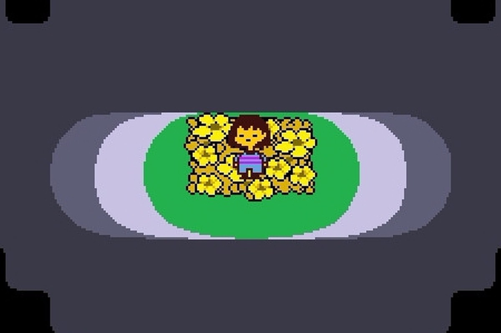
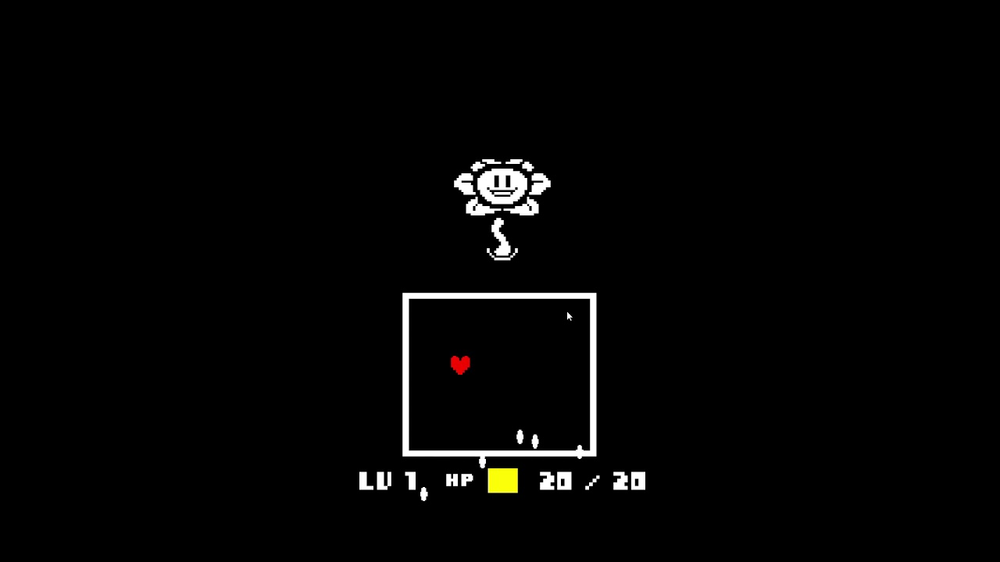
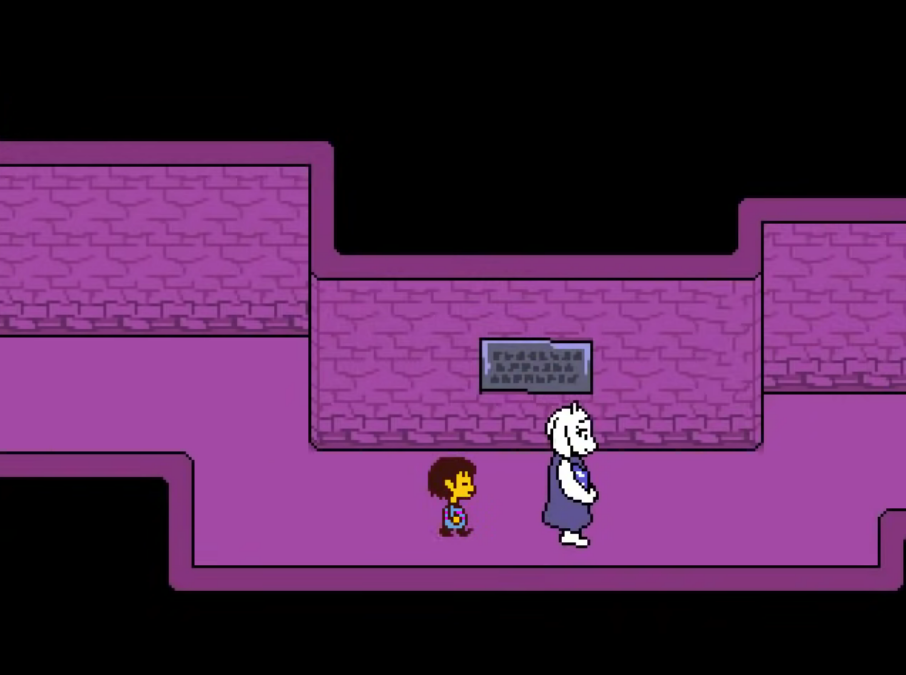
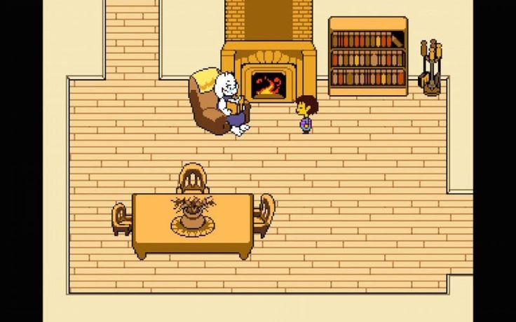
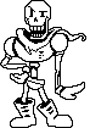

O que é Undertale?

Essa é
FRISK
, uma criança azarada que caiu em uma vala de um monte oculto.
Em uma terra desconhecida, ela se vê confrontada por criaturas estranhas, sendo uma delas,
FLOWEY.

Uma flor inicialmente amigável se mostra um monstro, ensinando a Frisk, que para sobreviver naquele mundo: É matar ou morrer.
Contudo,
TORIEL,
um ser com aparência de bode mas com espírito de mãe, decide acolher Frisk e ensiná-lo a sobreviver sem ferir ninguém.
E a partir daí, toda sua jornada inicia.
Junto com ela, você atravessa as ruínas:

E é acolhido em sua aconchegante casa depois de trancos e barrancos:

Também é aonde entra em ação a mecânica mais interessante do jogo: Você pode escolher entre matar ou poupar os seus inimigos.
Toriel tenta impedir Frisk de ir embora para explorar o mundo e então entram em uma batalha aonde você pode decidir o destino dela...
Ou...
Você segue sua jornada conhecendo monstros novos, explorando novos ambientes e tentando descobrir a sua importância ao ser o único humano presente em uma terra de monstros.
Seus principais novos amigos são eles:

Sans
Papyrus
Conforme você avança, você descobre que o rei da terra dos monstros (ASGORE) precisa de uma última alma de humana de sete, para poder abrir a barreira que tranca sua espécie, e infelizmente, ele não vai te deixar escapar inocentemente.
Asgore
Elimine a raça dos monstros um por um com o poder de sua alma, ou quem sabe, torne-se amigo de todos eles e salve uma população inteira em desespero. Tudo isso e muito mais em: UNDERTALE.